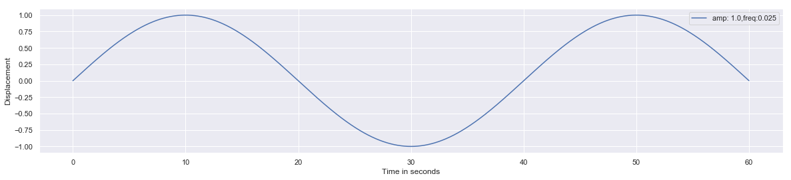
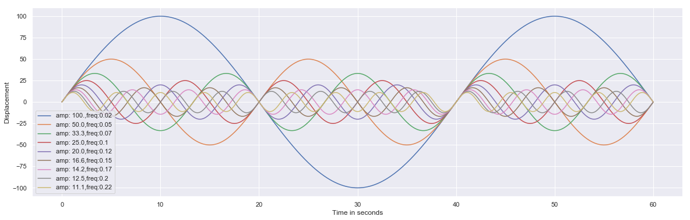
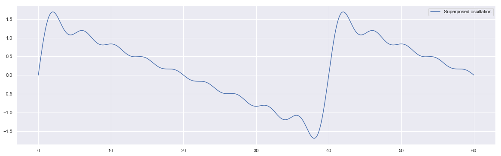

Arange demo with oscillation
Oscialltion
import numpy as np
import matplotlib.pyplot as plt
import seaborn as sns
sns.set()
$$ Y = Asin(\omega t + \phi )$$
fs = 100
ts = np.arange(0,60,1/fs)
ts
array([0.000e+00, 1.000e-02, 2.000e-02, ..., 5.997e+01, 5.998e+01,
5.999e+01])
np.sin(ts)
array([ 0. , 0.00999983, 0.01999867, ..., -0.27610536,
-0.28570267, -0.29527141])
freq = 0.5
ts*(2*np.pi*freq)
array([0.00000000e+00, 3.14159265e-02, 6.28318531e-02, ...,
1.88401311e+02, 1.88432727e+02, 1.88464143e+02])
Single oscillation
fs = 100
ts = np.arange(0,60,1/fs)
amp = 1.0
freq = 0.025
'''initialize figure'''
plt.figure(figsize = [20,4])
'''create oscillation: Y = Asin(wt)| w = 2.pi.f'''
ys = amp*np.sin(ts*(2*np.pi*freq))
lb = "amp: " + str(amp) + ",freq:" + str(freq)
plt.plot(ts,ys, label = lb)
plt.xlabel("Time in seconds")
plt.ylabel("Displacement")
plt.legend()
plt.show()

Variable Amplitude and Frequency in Oscillation
fs = 100
ts = np.arange(0,60,1/fs)
'''initialize figure'''
plt.figure(figsize = [20,6])
'''iterate over each amplitude and
frequency and create a oscillation plot'''
for i in range(1,10):
amp = 100*1/float(i)
freq = 0.025*i
'''Y= A sin(wt) | w = 2*pi*f'''
ys = amp*np.sin(ts*2*np.pi*freq)
lb= "amp: "+str(amp)[0:4] + ",freq:"+str(freq)[0:4]
plt.plot(ts,ys,label=lb )
plt.xlabel("Time in seconds")
plt.ylabel("Displacement")
plt.legend()
plt.show()

Superposition of oscillations
fs = 100
ts = np.arange(0,60,1/fs)
'''initialize figure'''
plt.figure(figsize = [20,6])
'''define 10 different amplitudes and frequencies'''
amps = [1*1/float(i) for i in range(1,10)]
freqs = [0.025*i for i in range(1,10)]
'''List comprehension: '''
ys = sum([amp*np.sin(ts*2*np.pi*freq) for amp,freq in zip(amps,freqs)])
'''create a plot'''
plt.plot(ts,ys, label= "Superposed oscillation")
plt.legend()
plt.show()

Is this a sawtooth wave?
Assignment:
- Write python function for creating a random oscialltion with amplitude in range (1,5) and frequency in range (0.25,1)
- Create 20 different oscillations by implementing python function defined above and implement superposition principle to obtain single resultant oscillation.
def oscillator():
'''implement y = Asin(wt)+Bcos(wt) with random
amplitude in (1,5) and freq in (0.25,1)'''